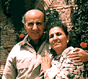

I s m a i l
Biography
Selected Paintings
Sketches
Computer Graphics
Exhibitions
T a m a m
Biography
Selected Paintings
Sketches
Exhibitions
G u e s t b o o k
Guestbook
View all entries
C o n t a c t u s
Shammout
O t h e r
R e l a t e d
T o p i c s
Art in Palestine
What's new
| Ismail & Tamam |
| a bit about us |

Tamam Al-Akhal was coming from Beirut, Lebanon, to study fine arts in Cairo. There she got acquainted with Ismail and participated in his exhibition with some of her own paintings The exhibition was patronized and opened by President Nasser in Cairo on 21 July 1954.
In the following years love between the two artists blossomed . Both of them loved each other, loved Palestine and loved art to which they dedicated their lives.
In 1954 Ismail left for Rome, Italy, to study art at the Academy of Fine Arts while Tamam remained in Cairo studying art.
They kept in touch their love growing ever and ever and finally they got married in 1959.
Both were faithful to love, to their art, to their homeland Palestine and its people They produced hundreds of oil and watercolour paintings concentrating on artistic values and on their main topic, the Palestinian humanbeing.
They held tens of exhibitions in many countries of the Arab World, Europe, the United States and Asia Reproductions and publications of their masterpieces have been circulating all over the world Most of their works are now possessed by several Arab and world museums, Arab institutions and admirers of their art all over the world.